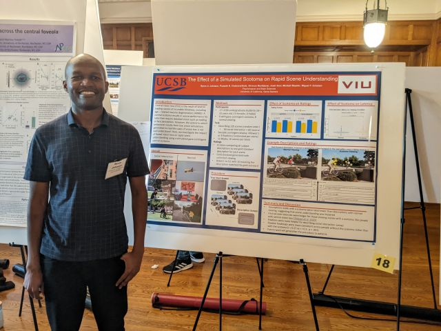
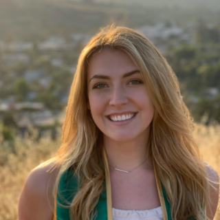
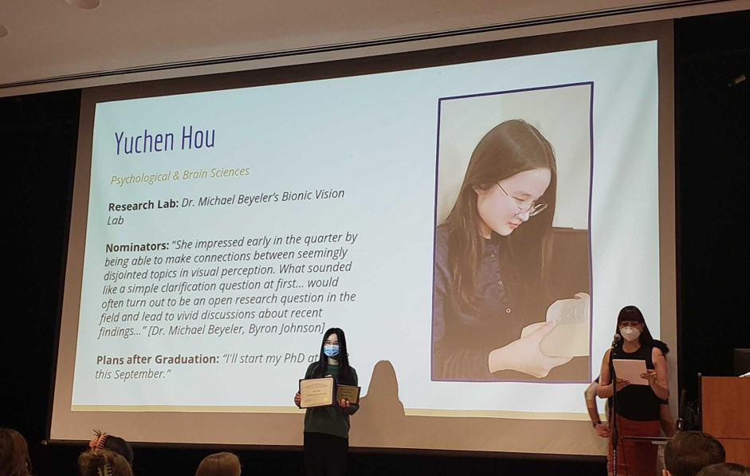

Bionic Vision Lab Member Awards 2022
 Ph.D. student Byron Johnson won not just one, but three travel awards for his exciting work using eye tracking to simulate artificial scotomas (damaged regions of the visual field) and their effects on visual processing and eye movements. In late May, Byron's poster "The Effect of a Simulated Scotoma on Rapid Scene Understanding" was selected for a travel fellowship to present at the Center for Visual Science's 32nd Symposium on Active Vision, hosted at the University of Rochester/Memorial Art Gallery (see photo). In July, Byron received a travel award from the Helmsley Charitable Trust to attend the prestigious three-week course for Computational Neuroscience: Vision at the Cold Spring Harbor Laboratory. And in August, Byron received a travel award to attend and give a talk about his research at the 2022 Biennial Perceptual Learning Workshop, held in Alyeska, Alaska. Congratulations, Byron!
 Over in Computer Science, M.S. student Ashley Bruce was recognized with the MS Student of the Year award, presented annually in recognition of a student who has excelled in both research and either department service or teaching. Ashley's research involved the optimization of epiretinal implant designs, which was accepted to the main track at MICCAI '22. From faculty: “Looking at her success and productivity, it is sometimes easy to forget that Ashley did not come from a traditional CS background. This means that a lot of the computing skills at which she now excels were self-taught. Not only did she make it into our prestigious Masters program, but she has thrived in it.”
 Meanwhile Yuchen Hou earned one of the most prestigious awards of the Psychological & Brain Sciences (PBS) department: the Abdullah & Marjorie R. Nasser Memorial Scholarship Fund Award. This award recognizes Yuchen's outstanding scholarship (she finished her BS with a 3.98 overall GPA) and dedication to research. We are fortunate to have Yuchen continue as Ph.D. student in the lab.
And the list goes on, with Tanya Bhatia winning the PBS Chairperson's Award - as well as the Exceptional Academic Performance Award alongside Yuchen Hou, Anvitha Akkaraju, and Ananth Mahes. In addition, Tanya and Anvitha completed innovative Honors Theses in the lab, which hopefully will see the light of the day as a peer-reviewed publication in the next couple of months.
What a fantastic array of achievements. Congratulations everyone!